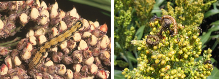
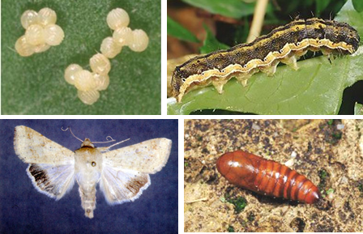

| Home |
| SORGHUM |
| 1. Sorghum Shootfly |
| 2. stem borer |
| 3. pink stem borer |
| 4. shoot bug |
| 5. earhead bug |
| 6. sorghum midge |
| 7. plant lice (Aphids) |
| 8. earhead web worm |
| 9. gram caterpiller |
| 10. plant bug |
| 11. stink bug |
| 12. mirid bug |
| 13. slug caterpiller |
| 14. Leaf roller |
| 15. flea beetle |
| 16. red hairy caterpiller |
| 17. semilooper |
| 18. weevils |
| 19. wingless grasshopper |
| Integrated Pest Management |
| Questions |
| Download Notes |
PESTS OF SORGHUM :: Minor Pests :: Gram Caterpiller
9. Gram caterpillar: Helicoverpa armigera (Noctuidae: Lepidoptera)
Distribution and status: World wide. It is major on cotton, lablab, chillies, tomato, pulses, maize and minor on sorghum.
Host range: Cotton, sorghum, lab lab, soybean, pea, safflower, chillies, tomato, groundnut, tobacco, gram, okra, maize etc.
Damage symptoms: Larvae hide within the ear heads and feeds on the grains. Earheads are partially eaten and appear chalky. Feacal pellets are visible within the ear head. |
 |
Bionomics: Adult is brown coloured moth with a ‘V’ shaped speck on forewings and dull black border on the hind wing. Larva is green with dark broken grey lines and dark pale bands. It shows colour variation of greenish to brown.
Management: Spraying of insecticides as given under cotton
|
 |